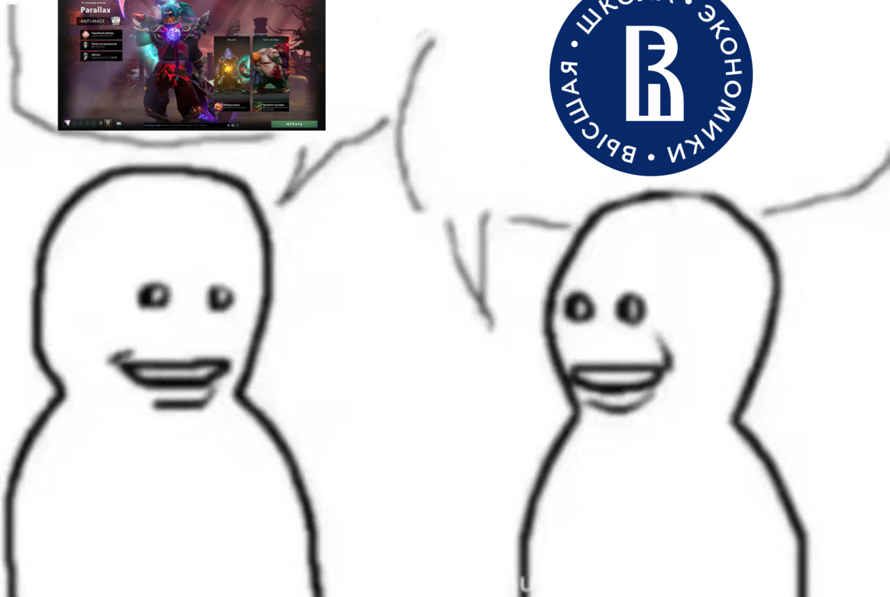

Параграф 3
Для более полного понимания влияния стадного чувства на учебную деятельность целесообразно провести сравнение с другими образовательными учреждениями. В частности, по имеющимся наблюдениям, в физико-техническом лицее среди учащихся широко распространено увлечение компьютерными играми, в особенности такими, как «Дота». Один из моих знакомых, обучающийся в данном лицее, также подвержен этому влиянию коллектива: когда значительная часть одноклассников посвящает свободное время играм, обсуждает игровые стратегии и проводит совместные сессии, сопротивляться подобной тенденции становится крайне затруднительно. Даже при наличии понимания того, что время следовало бы использовать более продуктивно, человек подчиняется общей модели поведения, поскольку именно она является доминирующей в его окружении. Это тот же самый механизм стадного чувства, что действует и в СУНЦ, однако направленный в принципиально иную, деструктивную сторону. Вместо того чтобы стимулировать академические достижения, коллективное влияние в данном случае отвлекает учащихся от учебного процесса и способствует формированию непродуктивных привычек.
